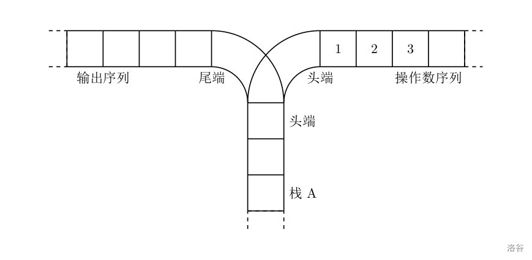
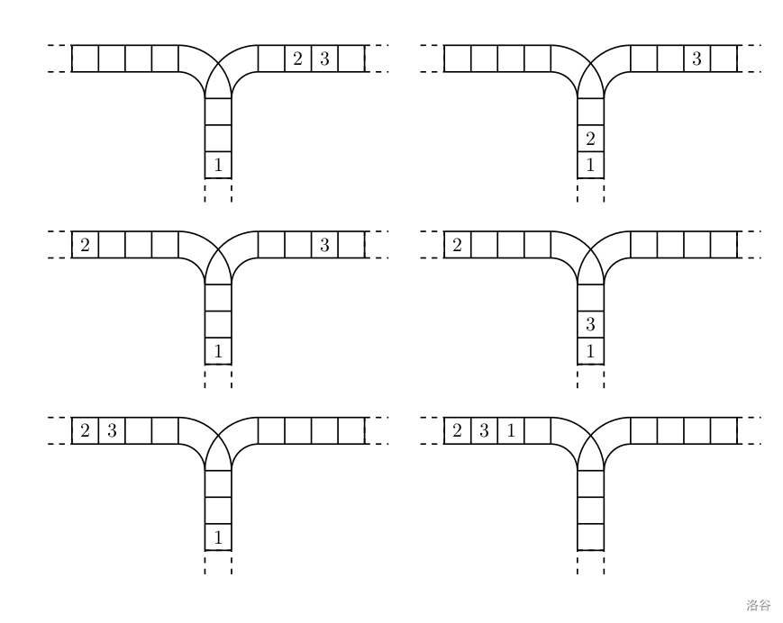
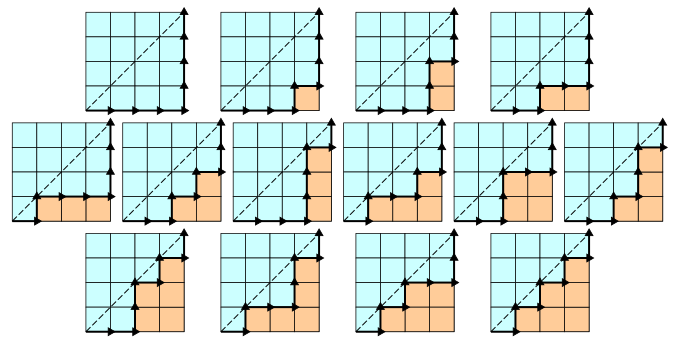
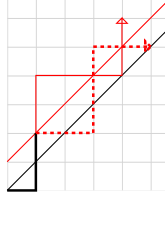

⭐每日一题⭐专栏
written by SJTU-XHW
本人学识有限，解析难免有错，恳请读者能够批评指正，本人将不胜感激！
LuoGu P1044. 栈？卡特兰数！
题目背景
栈是计算机中经典的数据结构，简单的说，栈就是限制在一端进行插入删除操作的线性表。
栈有两种最重要的操作，即 pop（从栈顶弹出一个元素）和 push（将一个元素进栈）。
栈的重要性不言自明，任何一门数据结构的课程都会介绍栈。宁宁同学在复习栈的基本概念时，想到了一个书上没有讲过的问题，而他自己无法给出答案，所以需要你的帮忙。
题目描述

宁宁考虑的是这样一个问题：一个操作数序列，$1,2,\ldots ,n$（图示为 1 到 3 的情况），栈 A 的深度大于 $n$。
现在可以进行两种操作，
- 将一个数，从操作数序列的头端移到栈的头端（对应数据结构栈的 push 操作）
- 将一个数，从栈的头端移到输出序列的尾端（对应数据结构栈的 pop 操作）
使用这两种操作，由一个操作数序列就可以得到一系列的输出序列，下图所示为由 1 2 3 生成序列 2 3 1 的过程。

（原始状态如上图所示）
你的程序将对给定的 $n$，计算并输出由操作数序列 $1,2,\ldots,n$ 经过操作可能得到的输出序列的总数。
说明
输入格式
输入文件只含一个整数 $n$（$1 \leq n \leq 18$）。
输出格式
输出文件只有一行，即可能输出序列的总数目。
样例 1 输入
1 | 3 |
样例 1 输出
1 | 5 |
思路
PART Ⅰ
首先弄清楚这就是个普普通通的简单的栈。数据结构书上曾经提到过一种与其类似的题目，讲的是给定一个入栈序列，要求某个元素在出栈序列中的约束关系，求最终出栈序列的种类。这里的思路我想应该相似，主要是数学问题；
一开始没有思路，就打算从少的数中推理规律。$n=1$ 时，自然只有一种序列；$n=2$ 时 2 种；$n=3$ 时，我们这样考虑（假设这三个元素从前到后分别是 $A,B,C$）：
- $A$ 必然是第一个进栈的；因为进栈序列是给定的（这不影响一般性）；
- 在 $A$ 进栈以后，但凡有一个元素进栈（无论几个），它必须都先出栈，$A$ 才能出栈；
因此，我们可以将序列分为：$A$ 出栈前的进出栈序列 和 $A$ 出栈后的进出栈序列 这两个序列，这两个序列有着极好的性质：同一个元素的进/出栈必然在这两个序列之一中，不可能分居两个序列（由上面第二条推得）；
这样就能轻松把这个问题分解为子问题（现在把 3 个拓展到 $n$ 个）：
- $A$ 出栈前有 $k$（$k\in[0,n-1]$，分类加法原理）个元素进栈并出栈，另外（分步乘法原理） $n-k-1$ 个元素在 $A$ 出栈后进栈并出栈；
我们假设 $n$ 个元素进出栈的序列种类是 $f(n)$，那么可知：
上面的结论再配合动态规划（空间换时间）足以让我们解决这题，但是，既然我们都得出了一个数学递推式，能不能进一步优化呢？比如通项公式（和“旋转函数、一步两步上楼梯”这些题一样）？
PART Ⅱ
不妨把思路转换到另一个问题上：这很像另一道题目——不超过对角线的方格路线问题：在 $n\times n$ 的正方形方格中，从左下角开始到右上角结束、不越过“左下-右上”对角线的、在右下方的单调路径有多少种。当时考虑的一个重要问题是右移格数时刻不能超过上移的格数；
因此类比到这里，栈对于出栈序列的约束就在于两点：① 出栈的元素在数量上一定少于进栈元素；② 先进后出。单从数量角度来看，我们可以类比成 “进栈=>向右走一格”，“出栈=>向上走一格”，这样原问题转化为上面的问题。
有同学会问，诶？出栈序列和元素种类没有关系吗？
没错！前面我们早已说明，可以只需考虑一个特定的进栈序列，而不失一般性。这样每次 向右一格 对应的元素是固定的，所以由 向右一格 和 向上一格 组成的序列能和出入栈序列一一对应；
我们对于这个问题还是没什么好办法，不过没关系！我们从 $n=4$ 的小的情况开始：

以上的情况都是符合条件的，但怎么用数学计算出来呢？
我们已经知道从左下到右上的单调路径就是从 $n$ 个向右、$n$ 个向上的路径中选出所有向右（或上）操作所在的步数，那么向上（或右）也就确定了，这个数量是 $C_{2n}^n$；这个情况就需要考虑原命题的反面：跨过对角线的路径是非法路径；
紧接着我们了解到 对每一条非法路径都有一个变换：从第一次跨越对角线的元素开始，将此后的点（包含自己）相对于副对角线折叠，这样得到的另一条与其对应的路径。如下图所示，黑色实线是方格的主对角线、红色实线是主对角线上面的一条副对角线、红色虚线是折叠前的一条非法路径、红色含箭头实线是折叠后的路径。

这个“折叠后的路径”，如图所示，因为终点在 $(n-1,n+1)$，所以不在这题的讨论范围中，但是恰恰因为所有这类路径的终点都在 $(n-1,n+1)$，能够针对这个折叠操作建立一个双射；因此可知所有非法路径都唯一对应着一条终点位于 $(n-1,n+1)$ 的路径；因此：
问题完成了：$f(n)=路径总数-非法路径数=C_{2n}^n-C_{2n}^{n-1}=\dfrac{1}{n+1}C_{2n}^n$.
经过上面的讨论，这题答案的递推公式、通项公式都已经解出。
其实，上面的 $f(n)$ 序列是有名字的——“卡特兰数”（Catalan Number），它是数学上的一个重要的序列（A000108），在很多问题中都有相似的思路，因此有很多定义式，并且相互等价。以上思路中涉及到了卡特兰数的 三个定义式，分别是：
事实上，卡特兰数还有许多种定义式，在以下问题中有应用：
- $n$ 个结点可以构造多少种不同构的二叉树；
- 对角线不相交的情况下，将一个凸多边形分成三角形区域的方法数；
- 在圆上选择 $2n$ 个不相同的点，将这些点成对连接，使得这些线段不相交的方法数；
- 一个栈有 $n$ 个相异的进栈元素，问出栈序列的种类数（本题）；
- 在 $n\times n$ 方格中，不越过对角线的非降对角路径的总数；
强烈大家阅读英文维基学习，这里的知识包括以上的证明、各种定义方式，比某些国内教科书说的还要详细：Catalan number - Wikipedia
实现
只有一个需要注意的，是组合数的计算方法。不建议直接使用定义，因为 $n!$ 很快会溢出；（这竟然是相当麻烦的地方
可以考虑 递推 $C_n^m=C_{n-1}^m+C_{n-1}^{m-1}$ 结合 动态规划；
1 |
|
评论